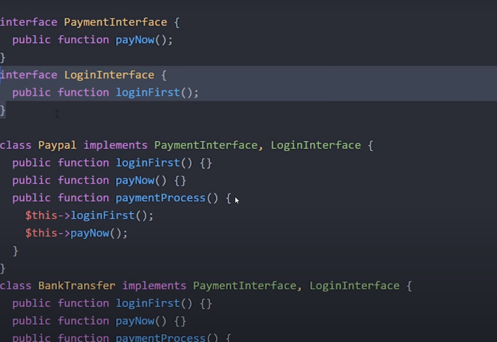

When dealing with two or more RELATED classes:
an interface is a set of rules that every class that "implements" it, has to follow.
Think of it as a strict guideline that organises how how classes get built by telling what is needed in each related class.

Both Paypal and BankTranfer classes have to adhere to the requirements of PaymentInterface AND LoginInterface or an error message will display which methods are missing from the classes.
PLEASE NOTE THIS IS NOT FOR ABSTRACTION!!